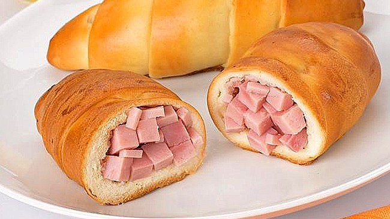

Cachitos de jamon

Description
Somewhat gooey savory ham kipfels as made in Venezuela; a staple of Venezuelan breakfasts and lunch breaks.
Ingredients
(Makes 16 cachitos)
Dough
- 1 cup whole milk
- 1/5 cup water
- 1/2 cup white sugar
- 1/2 teaspoon instant or dry yeast
- 4 1/2 cups all-purpose flour
- 2 eggs
- 1 teaspoon salt
- 1/2 cup unsalted butter, melted
Filling
- 1.1 pounds of ham
- 0.65 pounds of smoked bacon, frozen for about 30 mins
Egg wash
- 1 egg
- 1 teaspoon of sugar, white or brown
- 2 tablespoons water
Extras
- 1 Tablespoon unsalted butter
- Vegetable oil for greasing
NOTE: Do not add all the milk at once when making the dough; reserve 4 tablespoons and add only if necessary to soften the dough, little by little. The dough must be soft and elastic and the amount of liquid and kneading time may need adjusting depending on ambient conditions and rolling method.
Steps
Yeast
- In a small bowl, combine the milk and 1/5 cup of water and warm up in a microwave or oven until lukewarm.
- Add the 1/2 cup of sugar, yeast and 3 heaping tablespoons of the flour. Whisk well but not too vigorously and let stand for 3-5 minutes.
- Scan the bowl for small bubbles. If none have appeared, wait a little longer (if no bubbles form, you might have heated the liquid too much or the yeast was not alive in the packet. Fix accordingly.)
Dough
- In a big mixing bowl, combine the remaining flour, yeast mixture and the two eggs, and beat slowly until well mixed.
- Add the salt and melted butter at this time, not sooner (so as to not kill the yeast.) Mix well at a faster speed.
- On a large, clean surface, drop the dough and knead well until very elastic, about 10 minutes.
- Roll the dough into a ball.
- Take a large plastic zipper bag and drop the dough ball into the bag. Seal and let stand for two hours.
Ham-Bacon Mixture and Egg Wash
- Cube the ham and bacon, mix in a bowl well and set aside.
- Whisk the egg wash ingredients in a small shallow bowl and set aside.
Cachito Construction
- After the two hours have passed and the dough has risen, drop the dough on the previously used kneading surface.
- Halve the dough and roll each half into a ball. Set aside.
- Lightly grease another large surface and drop one of the dough balls on it.
- Flatten the ball into a large, thin circle. With a pizza cutter, divide it into eight equal slices.
- Grab one of the slices and place it elsewhere on the surface. Pull the long end as much as possible without breaking and then the side ends as well. It will resemble a stretched triangle.
- Flatten the edges of the triangle with your fingers.
- Stretch back the base of the triangle a little, making a little rounded edge that will become a pocket.
- Grab a handful of the ham-bacon mixture and place it on the pocket side. Pull the two side ends, bring them over the ham mixture and press them together.
- Somewhat tightly, wrap the rounded edge over the ham mixture into a pocket.
- Slowly, and stretching/tucking the dough in as you go, roll the wrapped pocket over the long outstretched end, in a zigzagging pattern, all the way.
- Roll the completed cachito smooth and place it on a lightly greased baking tray.
- Repeat with the other seven slices of dough, and then with the other dough ball, placing each cachito on the baking tray. Use two trays if necessary.
Baking
- Brush each cachito generously with the egg wash mixture.
- Place the cachito tray(s) in the oven at 350° F (do not preheat) and bake for 30 minutes until golden brown. Melt the tablespoon of butter in a small bowl.
- Take out the cachitos, brush them with the melted butter and let them cool for 2-3 minutes.
- Separate them from the tray(s) and serve.
Back